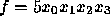

The most common way to manipulate ADDs is via Cudd_addApply . This function can apply a wide variety of operators to a pair of ADDs. Among the available operators are addition, multiplication, division, minimum, maximum, and boolean operators that work on ADDs whose leaves are restricted to 0 and 1 (0-1 ADDs).
The following fragment of code illustrates how to build the ADD for the function .
DdManager *manager;
DdNode *f, *var, *tmp;
int i;
...
f = Cudd_addConst(manager,5);
Cudd_Ref(f);
for (i = 3; i >= 0; i--) {
var = Cudd_addIthVar(manager,i);
Cudd_Ref(var);
tmp = Cudd_addApply(manager,Cudd_addTimes,var,f);
Cudd_Ref(tmp);
Cudd_RecursiveDeref(manager,f);
Cudd_RecursiveDeref(manager,var);
f = tmp;
}
This example, contrasted to the example of BDD manipulation,
illustrates the following points: